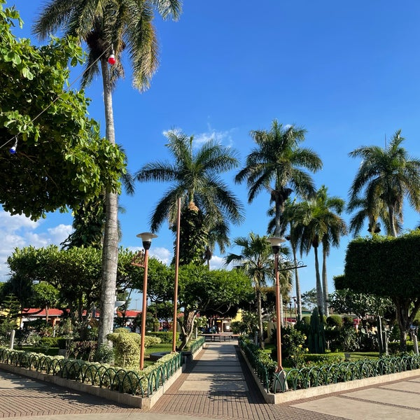
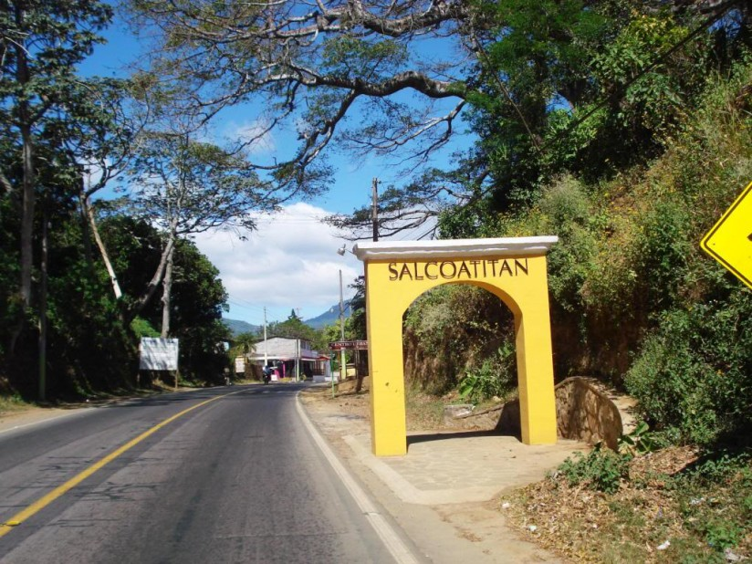
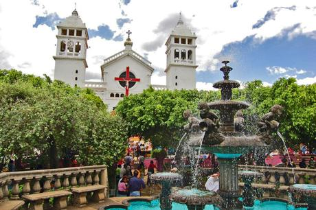
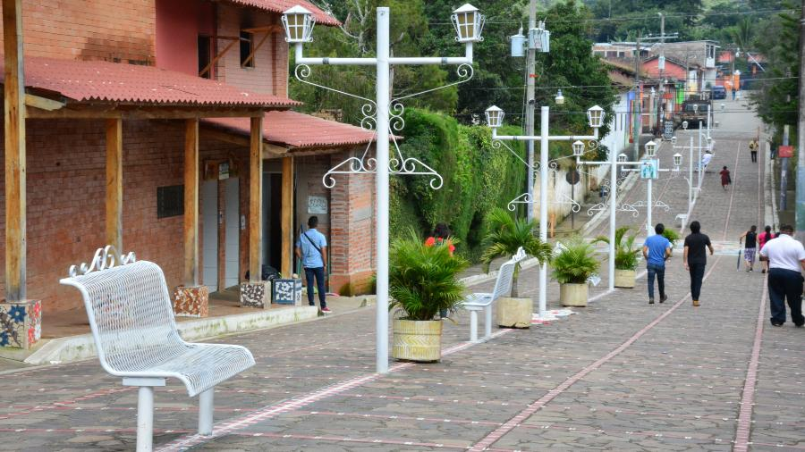
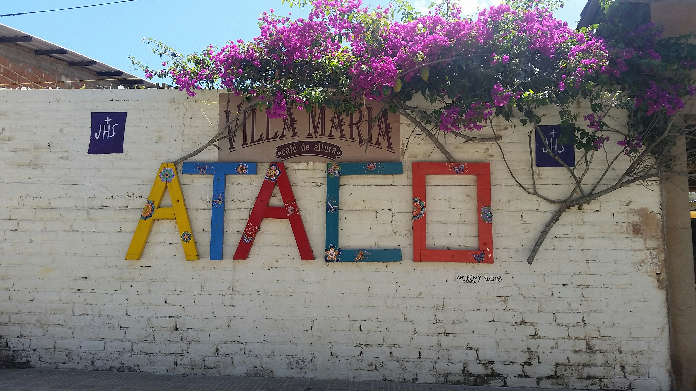

Ruta de las Flores
Home
El Pital
Ruta de las Flores
Lago de Coatepeque
A continuación mostraremos todos los pueblos vivos que conforman la ruta de las flores.
Nahuizalco

Salcoatitan

Juayúa

Apaneca

Ataco
